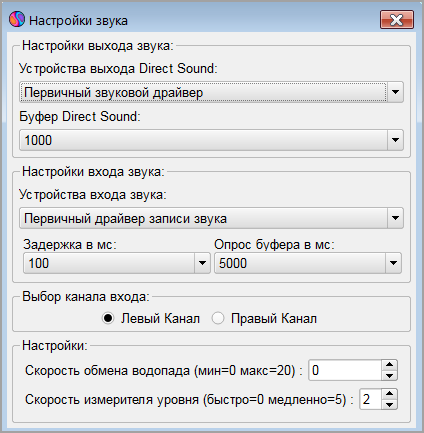

MSHV
Разработана LZ2HV - Christo
Протестировано SP9HWY - Jurek и G0LFF - Dick
Идея дизайна OZ2M - Bo
Двоичные файлы Linux OZ1PIF - Peter (SK)
Руссификация R5WM - Владимир (SK) и RU4NG - Игорь
Перевод:
Китайский упрощенный и традиционный VR2UPU - SZE-TO Wing
Испанский и Каталонский, EA3KE - Toni Olmo
Португальский, CU3AK - Jaime Eloy
Румынский, YO3JW - Pit Stefan Fenyo
Датский, 5P1KZX - Michael
Польский, SP5QWB - Bartek
Французский, ON6DP - Paul
Бразильский Португальский, PP7CJ - Crezivando Junior
Норвежский, LA3QMA - Kai Gunter Brandt
Итальянский, IW4ARD - Gianni Matteini
Чешский, OK1ABB - Miroslav Skoda
Благодарность K1JT Joe Taylor и Группе развития WSJT.
Алгоритмы, исходный код,
внешний вид WSJT-X, связанные программы, спецификации протоколов для режимов FSK441, FT8/4,
JT4, JT6M, JT9, JT65, JTMS, QRA64, ISCAT, MSK144 и авторское право © 2001-2019 принадлежат одному или нескольким из следующих авторов:
Joseph Taylor, K1JT; Bill Somerville, G4WJS; Steven Franke, K9AN; Nico Palermo, IV3NWV; Greg Beam, KI7MT;
Michael Black, W9MDB; Edson Pereira, PY2SDR; Philip Karn, KA9Q и другим членам Группы Развития WSJT.
Программа была заимствована из программного обеспечения с открытым исходным кодом K1JT, только декодеры и генераторы были использованы от K1JT - WSJT и были переписаны на язык программирования C ++. Почти то же расположение элементов управления было повторено для удобства пользователей. Программное обеспечение полностью совместимо с режимами WSJT, WSJTX. В программу, по просьбе пользователей, добавлена мода MSKMS это гибрид FSK441 и MSK144. Визуальный интерфейс - QT5.6.3. Все необходимые библиотеки скомпилированы статически и встроены в тело программного обеспечения. Дополнительные библиотеки не нужны. Все
настройки и конфигурации принимаются сразу и не требуют
перезапуска, например, изменять настройки звука или управление RIG.
Информация:
-
MSK144 Для метеорной связи. Продолжительность кадра сообщения составляет 72 мс, а с опцией Sh 20 мс скорость TX для стандартных сообщений достигает 250 символов в сек.
-
JTMS Для метеорной связи. Скорость передачи символов 197 символов в сек.
-
FSK441 Для метеорной связи. Скорость передачи символов 147 символов в сек.
-
FSK315 Для метеорной связи. Скорость передачи символов 105 символов в сек.
-
ISCAT Оптимизирована для метеорной и ионосферной связи на 6 метров. Скорость передачи символов 16,15 или 32,3 символов в сек.
-
JT6M Оптимизирована для метеорной и ионосферной связи на 6 метров. Скорость передачи символов 14.4 символов в сек.
-
FT8/4 Предназначены для быстрых тропосферных и Es QSO на УКВ и любых видов прохождения на КВ включая и режим контестов.
-
JT65 VHF/UHF Для EME и тропосферной связи, а также стандартного обмена на КВ.
- Q65 For ionospheric scatter, tropospheric scatter, rain scatter, TEP, and EME.
-
PI4 PharusIgnis4 Цифровая модуляция (MGM) предназначена для маяков.
ВНИМАНИЕ: В модах JT65 и FT8/4 не переключайте ( НЕ изменяйте) Макросы сообщений когда программа находится в состоянии ТХ иначе ваша передача не будет декодированна и в случае если у корреспондента работает Мультиответ, то QSO может быть потеряно.
|
Системные Требования:
-
SSB трансивер и антенна для одного или многих VHF/UHF/SHF диапазонов.
-
Компьютер с ОС Microsoft Windows Xp, Windows7 32 или 64 Бит.
-
Для Linux OS QT5.6.3, Alsa и PulseAudio библиотеки.
-
1 ГГц или более быстрый CPU и 512 МБ доступной оперативной памяти RAM.
-
Монитор с минимальным разрешением 1024x768 или для ноутбуков 1366x768 (больше лучше).
-
Интерфейс компьютер-радио, использующий последовательный порт для переключения Tx/Rx, или управления с VOX.
-
Устройство Аудио вход и выход, поддерживаемые операционной системой (звуковая карта, полный дуплекс).
-
Аудио или эквивалент USB соединения между трансивером и компьютером.
-
Средство для синхронизации часов компьютера в пределах ±1 сек.
Инсталляция:
-
Нет необходимости в специальной установке, просто извлечь файл архива с его
папкой, в том месте, где вы хотите разместить ее на ПК.
-
Рекомендуемое место - не на диске с операционной системой, например, если ОС находится на C:\ , то извлечь нужно на диск D:\MSHV_XXX .
-
Запуск программного обеспечения из файла * .exe или создайте ярлык на рабочем столе. Не копируйте .exe файл на рабочий стол.
-
Если у вас есть старая версия программного обеспечения, пожалуйста, удалите существующий ярлык на рабочем столе, если он есть. Распакуйте архив в эту папку,
а затем создайте новый ярлык на рабочем столе. Если вам больше не нужна
старая версия, вы можете удалить ее предварительно скопировав файлы настройки и Log в новую созданную папку.
Конфигурация программы:
-
«Настройки звука» - для конфигурации вашей звуковой карты и настройки скорости водопада.
-
«Интерфейс управления» - позволяет сделать сопряжение компьютера с трансивером для обеспечения автоматической перестройки по диапазонам и частотам, а также для управления приемом-передачей (РТТ).
Кроме этого тут можно задать параметры управления трансвертером.
-
«Макросы» - для просмотра, изменения и создания сообщений для передачи.
-
«Воспроизводящее устройство» напрямую обращается к микшеру Windows. При передаче этот элемент управления устанавливает соответствующий уровень для вашего передатчика.
-
«Записывающее устройство» как и воспроизводящее напрямую обращается к микшеру управления записью Windows. С помощью этого элемента управления вы регулируете уровень шума от приемника до достижения 0дб при этом отслеживаете индикатор справа на панели программы. Это важно для правильного декодирования.
-
В окне «Конфигурация Радио и Сети» вы можете включить отправку спотов на PSK Reporter и в DX-Spot кластер (F8). Кроме этого здесь можно настроить сопряжение MSHV с внешним журналом регистрации связей.
Также в этом окне можно изменить частоты настройки по модам.
-
С помощью - «Генерировать тоновые сигналы для тестирования», создаются конкретные сообщения, которые генерируют различные тоны, с помощью которых вы можете установить уровни передачи. Например если выбрать @ 1000 = 1000 Гц, то регулировка будет в полосе 100 Гц - 3000 Гц, есть и специальное тоновые комбинации @ A = 882 Гц, @ B = 1323 Гц, @ C = 1764 Гц, @ D = 2205 Гц, которые приблизительно соответствуют полосам частот, на которых работает программное обеспечение.
-
Окно «Синхронизация времени» - это быстрый доступ к настройкам Даты и времени на компьютере. Следуйте инструкциям в информационном окне для синхронизации времени компьютера. Для этого вам необходимо подключиться к Интернету.
-
«Распознать период JTMS FSK ISCAT JT6M и MSK FT8/4 JT65» для автоматичекого переключения TX FIRST/TX Second после клика на принятом позывном.
- «Показать астрономические данные». Просмотр полной информации о Луне и данных для корреспондентов при EME QSO.
«Показать на водопаде ось DF JT65». Изменить сетку оцифровки значений DF в режиме JT65.
-
«Выключить маркеры на водопаде JT65». Это две вертикальные пунктирные линии слева и справа от трека.
-
«Мультиответ (Auto Seq) FT8/4 Dx Экспедиция». Режим Fox/Hound - (много слотов DX Экспедиция) программа позволяет вам работать в автоматическом режиме используя 5 или 3 слота и использовать CQ с различными добавлениями из списка н/р CQ ES, CQ DX и т.д., программа сама отвечает вызывающим вас корреспондентам, производит обмен сообщениями и записывает QSO в Log. Для быстрого перехода в обычный режим нажмите CTRL + ~.
-
«Мультиответ (Auto Seq) FT8/4 Стандарт». Позволяет вам работать в автоматическом режиме используя 1 или 2 слота, программа сама отвечает вызывающим вас корреспондентам, производит обмен сообщениями и записывает QSO в Log. В этом режиме можно вызвать станцию дающую CQ сделав 2 клика на принятой строке. Для быстрого перехода в обычный режим нажмите CTRL + Q.
-
«Два окна для декодирования FT8/4 JT65». Делит приемное окно на две части. В левом окне показываются все декодированные сообщения в полосе обзора, а в правом только для вас и ваши передаваемые сообщения.
-
«Двойной клик на позывном для (AUTO IS ON) для MSK FT8/4». Запускает автоматическую передачу после двойного клика на выбранном позывном.
-
«Пропуск Tx1 MSK FT8/4». После клика на выбранном позывном передача начинается с макроса Тх2 Убрать флажок если Вы DX-Экспедиция или работаете специальным позывным.
-
«Очистка сообщений в следующем периоде FT8/4». Очищаются все принятые сообщения в окне общего обзора за предыдущий период.
-
«Записать автоматически QSO в Log MSK FT8/4». Прямая запись QSO в MSHV Log и во внешний Log без вывода окна добавления.
-
«Подсказать о записи QSO в Log MSK FT8/4». Показывает окно Добавить в Log после того, как при стандартном QSO, приняты RR73 или 73 от корреспондента. Здесь можно выбрать тип прохождения и внести комментарии.
-
«Предупредить о повторном QSO (В4)». Показывает окно с предупреждением если QSO было ранее.
-
«При записи в Log Время начала = Времени окончания». Выбор варианта записи времени проведения QSO в Log.
-
«Включить Monitor при запуске». Запускает монитор автоматически при запуске программного обеспечения.
-
Меню Опции - Настройки звука и Скорости обмена водопада

-
Настройте вход и выход звуковой карты, выберите для входного сигнала Левый или Правый каналы.
-
Скорость обмена водопада сделана для возможности регулировки при использования программы на медленных компьютерах. При значении = 20, водопад будет двигаться медленнее. Это уменьшает нагрузку на CPU.
-
Скорость измерителя уровня, замедляет или убыстряет смену показаний измерителя уровня.
|
|
|
Функции программного обеспечения:
|
|
|
- Меню Декодер
-
Быстрый для MSK и FT8/4 , используется для медленных процессоров ПК.
-
Нормальный для MSK и FT8/4, для более чувствительного декодирования.
-
Глубокий поиск для MSK и FT8/4, используется для быстрых процессоров.
-
«Декодирование FT8 - Три Интервала» для высокоскоростных ПК, например (Intel Core i3, i5, i7 ...).
1й интервал: декодирование при 11,8 с. 2й интервал: вычитание всех из 1го интервала за 13,5 с. 3й интервал: вычитает всех, кто не вычитался во 2ом интервале и декодирует сигналы за 14,7 с.
-
MSK RX Выключить Выравнивание
-
MSK RX Выровнять Статически (С), статические коэффициенты для выравнивания.
-
MSK RX Выровнять Динамически (Д), динамические коэффициенты для выравнивания.
-
MSK RX Выровнять (С) и (Д), Статические и Динамические коэффициенты.
-
Декодировать Одиночный сигнал JT65, используется для синхронизации только одного сигнала (режим WSJT).
-
Декодировать Макс 4,8,16,32 сигналов JT65, используется для синхронизации нескольких сигналов JT65.
-
Уровни Агрессивного поиска для JT65. Настройка уровней для декодеров Агрессивного поиска и Агрессивности Глубокого Поиска.
-
Включить Sh (короткие сообщения) на УКВ - особенность использования декодера при работе через Луну.
-
Включить Усреднение для JT65, используется для очень слабых сигналов, необходимо минимум 3 периода для активации усредненного декодирования.
-
Включить Глубокий Поиск для JT65 рекомендуется только для УКВ диапазонов.
-
Включить AP для FT8/4 и JT65 или переключиться на стандартные функции декодирования.
|
- Меню Диапазон
-
Руссифицированная версия MSHV в Меню Диапазон содержит два дополнительных диапазона на которые, при работе системы САТ, может быть переключен ваш трансивер. Это "Check Frq" частота 4,995МГц (RWM) и "EME Radar" частота 143.049 (Graves). На этих частотах необходимо использовать моду JT65.
-
На "Check Frq" вы должны принять сигнал RWM на отметке 1000Гц шкалы аудиочастот дисплея. Любое отклонение указывает на сдвиг частоты в вашем трансивере и эта погрешность должна быть скорректирована при установке частоты и тогда ваш сигнал будет легко декодироваться. Частоту вы можете корректировать каждый раз с помощью валкодера или при наличии САТ прописать в Меню Конфигурация Радио и сети - Редактор информации о радио..
-
На "EME Radar" можно оценить качество приема сигналов отраженных от Луны.
|
- Зона отображения Дисплей (водопад)
-
Программа содержит два дисплея (водопада), которые показывают принимаемый сигнал. Когда дисплей 1 заполнен после 30 секунд, графическая информация автоматически перемещается на дисплей 2. Затем запускается дисплей 1 наполняя снова новой информацией. Линейный график времени в секундах отображается на панели t сверху дисплея. Средняя часть дисплея представляет сигнал в виде водопада. В нижней части представлен линейный индикатор уровня сигнала.
-
Чтобы декодировать принимаемый сигнал на дисплее, щелкните мышью в центре принятого пинга. При щелчке мыши на дисплее появляются две линии, которые показывают область декодирования. Нажатие правой кнопкой мыши делает область в два раза больше, чем нажатие левой. Нет никакой зависимости от того, какой дисплей вы декодируете, они оба всегда активны.
-
Справа есть ползунки для настройки параметров дисплея. Пожалуйста сначала отрегулируйте уровень шума с приемника, в микшере «Записывающего устройства Windows», установив индикатор уровня сигнала на 0 дБ. Во-вторых, настройте дисплеи с помощью ползунков TUNE DISP, чтобы получить темно-синий цвет с
маленькими зелеными точками, как показано на рисунке выше.
-
Для небольшого дисплея компьютера с разрешением (н.р. 800x600 пикселей) есть кнопка «2D / 1D», которая переключает работу с двумя или одним дисплеем или использовать кнопки F10 - если один дисплей 1D или F11 - если 2 дисплея 2D.
-
Под каждым дисплеем есть кнопка, которая поможет вам сохранить данные в файле. Файлы хранятся в каталоге RxWavs. Кнопка отображает имя файла. Имя файла содержит информацию о позывном корреспондента, типе работы, дату и время. Существует исключение, если позывной через дробь (/), то (/) будет заменена словом SLASH, например LZ2HV / P, будет сохранено как LZ2HV_SLASH_P. Это необходимо, потому что (/) означает создание на компьютере пути к каталогу и вы не сможете сохранить файл.
|
|
- Окно принятых сообщений
-
В этом окне показываются декодированные сообщения. Вы можете скопировать сообщение следующим образом. Щелкните левой кнопкой мыши один раз, чтобы выбрать строку, затем Ctrl + C, чтобы скопировать информацию и затем с помощью Ctrl + V вы можете вставить его в текстовый документ. Скопированное сообщение будет специально отформатировано, например:
FSK441 103330 11.6 s 320 ms 7 dB 26 -18 Hz > RA3EL RX1AS R26 R26 RA3EL....
или так:
MSK144 132500 2.8 s 10 dB 1 Hz Freq 1501 Hz > R7CE RA3RF R+05.
-
Если Вы хотите добавить рапорт в TX RPT для передачи, просто дважды щелкните строку из столбца dB или Rpt. Если дважды щелкнуть строку левой кнопкой мыши в столбце Messages , вы сможете ввести полную информацию в окошки To radio, Locator, TX RPT и ячейку макросов для передачи Tx1-Tx5.
|
- Панель кнопок
-
Особенность кнопок управления приемом и передачей в программном обеспечении в том, что когда монитор включен, он не остановится до тех пор вы не отключите его кнопкой остановки STOP MONITOR. В AUTO IS ON, если вы нажмете кнопку STOP TX, то AUTO IS ON будет отменен и надпись будет изменена на AUTO IS OFF
-
Кнопка RESET QSO очищает окошки To radio, Locator, RX RPT,TX RPT и обновляет ячейку макросов Tx1-Tx5.
-
Кнопка CLEAR MESSAGES удаляет все сообщения в Окне принятых сообщений.
-
Кнопка TUNE включает тон 1000 Гц для настройки передатчика.
|
- Панель данных для QSO (имеются отличия в зависимости от Моды)
или
-
Эта панель отображает частоту для QSO (если есть контроль CAT, то здесь будет ваша реальная частота из Rig), позывной, локатор, дату, время и данные из базы для корреспондента. При вводе правильного локатора программа рассчитывает направление и расстояние до корреспондента.
-
Если RIG (трансивер) через САТ подключен к приложению то виджет отображает частоту из трансивера, а если RIG отключен, то через 12-13 сек. приложение вернется к настройкам по умолчанию. Если вы хотите вернуться на частоту по умолчанию, нажмите кнопку «F».
-
Кнопка «ADD TO LOG» записывает QSO в MSHV Log. Вы можете просмотреть журнал Log из меню файла или нажать Ctrl+L.
-
В окне «RX RPT» вы можете установить принятый рапорт вручную.
-
Позывной корреспондента находится в окне «To radio». Вы можете ввести его двойным щелчком на принятой строке или записать вручную. Тоже самое относится и к окну «Locator». Кнопка «LOOKAP» для поиска локатора в базе. Если вам известен точный локатор корреспондента, вы можете ввести его в базу данных нажатием кнопки «ADD».
-
Monitor Radio 1 (R1:), Monitor Radio 2 (R2:) дает возможность отслеживать в приемном окне нужных корреспондентов и даже если они используют вариант «MSK144 + Sh». Во всех модах эти метки работают и имеют «Подсветку Текста».
|
-
Панель - Порог Декодирования (S Limit), DF Tol, Рапорт (TX RPT) и другое
Настройки для быстрых Мод:
-
S Limit - Порог Декодирования (Отсечка помех) отображен сверху, и его можно отрегулировать в соответствии с условиями приема опираясь на значение по умолчанию (def = 1).
-
Функция ZAP: Отфильтровать несущие (узкополосные сигналы примерно постоянной амплитуды), перед попыткой декодирования. Эта функция требует 10сек приема несущей, прежде чем начать работать должным образом. Период фильтрации не отображается на водопаде.
-
DF Tol - здесь приминительно к быстрым модам указывает на возможные различия в частотах, и чтобы подстроиться на принимаемый сигнал можно произвести коррекцию.
-
Флажок Sh адаптирует программу для создания коротких сообщений в модах JT65 и MSK144.
-
Флажок SWL позволяет декодировать сообщения MSK144 если корреспонденты используют короткие сообщения Sh.
-
TX RPT - ручной ввод оценки принятого сигнала.
-
TX/RX 30 s - Установка временного интервала циклов передачи/приема.
-
QRG (Рандом) - при использовании функции Split в трансивере смещает частоту при общем вызове в КГц ( 3 цифры макс.).
-
Метка «RXF/RXS» - Если у вас рядом работает мощный корреспондент и вы не желаете чтобы ваше окно приема было заполнено его сообщениями, то активируйте метку "RXF/RXS" или нажмите на F9. В этом случае водопад и вывод сообщений будут работать только в течение первого или второго периода.
-
Флажки TX FIRST и TX SECOND устанавливают период передачи.
-
Кнопка GEN MSG генерирует сообщения из макросов и вводит тексты в сообщения Tx1-Tx5.
-
Кнопка AUTO IS ON / OFF контролирует работу программного обеспечения, а именно работает программа в автоматическом режиме или нет. В режиме AUTO IS ON начнется передача в синхронизированном заранее периоде (30 сек).
Настройки для медленных Мод:
-
Окно - Не в очереди показывает ожидающего корреспондента в режиме контест.
-
SN - порядковый номер в контесте.
-
DF Tol - на этой вкладке для медленных мод. Определяет полосу захвата сигналов на дисплее для последующего декодирования.
-
Флажок LTR служит для совмещенния, удержания и обоюдного перемещения кликом мыши на дисплее частот TX и RX. Тоже самое можно сделать и при снятом флажке удерживая CTRL кликнуть мышью на дисплее.
При снятом флажке, кликом мыши на дисплее, можно перемещать частоту RX по спектру. Если кликнуть вверху на шкале частот, то частота RX совместится с TX.
-
Кнопка TX=RX перемещает частоту TX на частоту RX.
-
Метка «ASeq» - Автозаполнение макросов в модах MSK144 и FT8/4.
Примечание: В моде JT65 частота TX фиксированная 1270Гц а частоту RX можно менять кликом мыши.
В моде FT4 желательно всегда использовать ASeq из-за того, что время на установку макросов вручную ограничено. При этом надпись окрасится в красный цвет.
|
|
-
Горячие клавиши
-
Ctrl+H Помощь MSHV
-
Ctrl+K Горячие клавиши
-
Ctrl+O Открыть Файл
-
Alt+F4 Выход
-
Ctrl+S Настройки звука
-
Ctrl+I Интерфейс управления
-
Ctrl+M Макросы
-
Ctrl+P Воспроизводящее устройство
-
Ctrl+R Записывающее устройство
-
Ctrl+L Показать Log
-
Alt+L Записать QSO в Log
-
Alt+M Старт Monitor
-
Alt+S Стоп Monitor
-
Esc TX Stop
-
Ctrl+A Переключить Auto On/Off
-
Ctrl+G Создать сообщение
-
Ctrl+1 Сохранить дисплей 1 в файл *.WAV"
-
Ctrl+2 Сохранить дисплей 2 в файл *.WAV"
-
Ctrl+Z Переключить ZAP Вкл/Выкл
-
Ctrl+~ Мультиответ (Auto Seq) FT8/4 DX Экспедиция (На клавиатуре EN).
-
Ctrl+Q Мультиответ (Auto Seq) FT8/4 Стандарт.
-
F1 по F7 Tx1 по Tx7
-
F8 Показать DX Spot диалог
-
F9 RX Только 1-й или 2-й Период
-
F10 Переключить количество дисплеев с 2-х на 1 и наоборот
-
F11 Переключает дисплеи, если работа на одном дисплее
-
F12 Скриншот
|
Каталоги и файлы:
- Каталог AllTxtMonthly
-
Текстовые файлы за каждый месяц собраны в каталог AllTxtMonthly, они содержат все TX и RX сообщения. Вы можете открыть их в текстовом редакторе и искать необходимую информацию для ваших связей. Не удаляйте каталог.
-
Вы можете периодически удалять текстовые файлы, если в них больше нет необходимости.
|
|
|
- Каталог RxWavs
-
Он содержит все записанные звуковые файлы за время всей вашей работы. Не удаляйте каталог.
-
Периодически, Вы можете удалить файлы, которые вам не нужны.
|
- Каталог Screenshots
-
Не удаляйте каталог. Он содержит все файлы скриншотов сделанные во время всей вашей работы.
-
Вы можете периодически удалять файлы скриншотов, если в них больше нет необходимости.
|
|